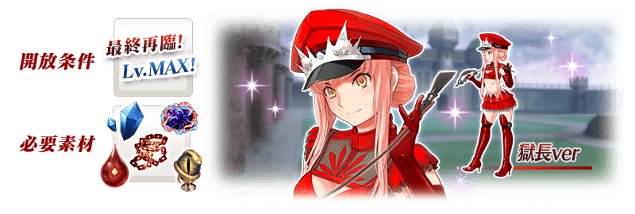
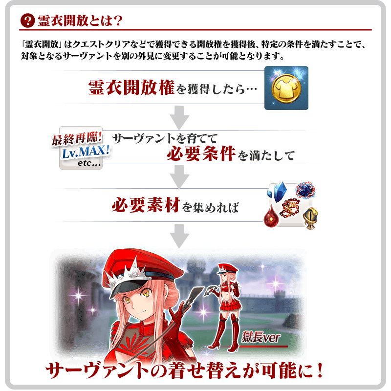
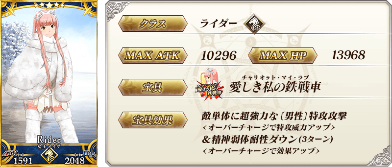
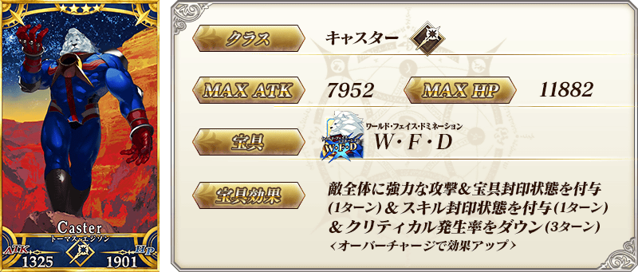
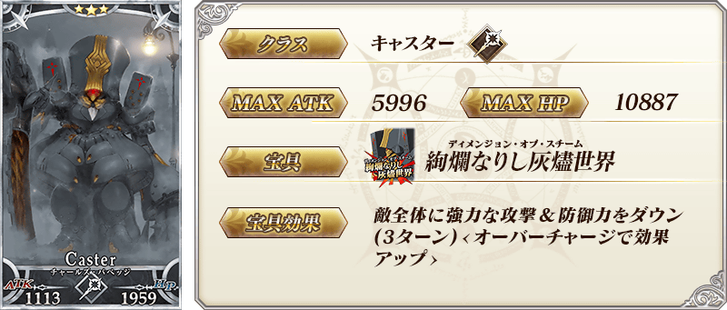
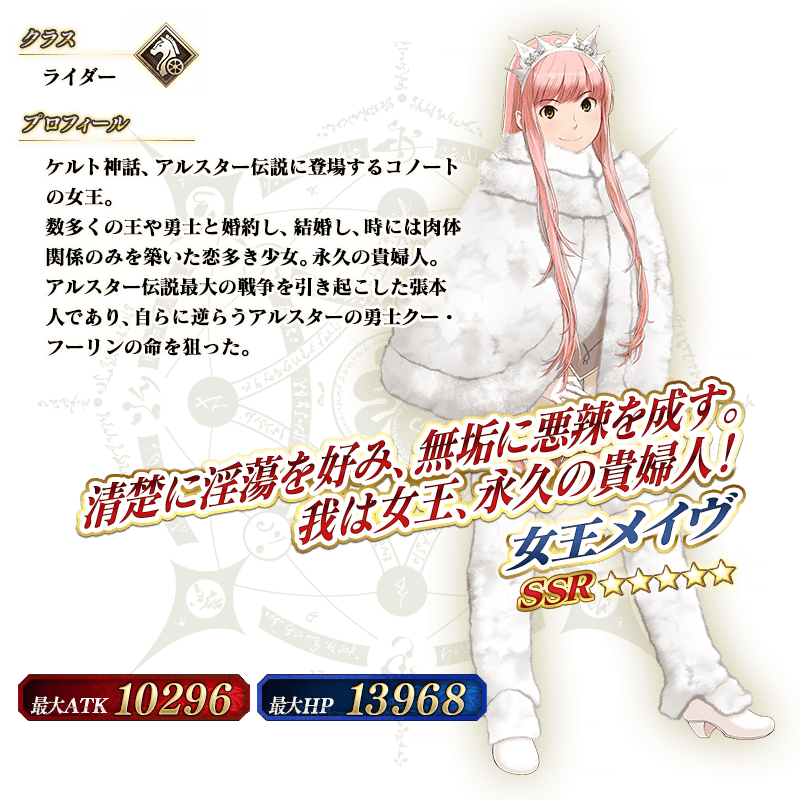
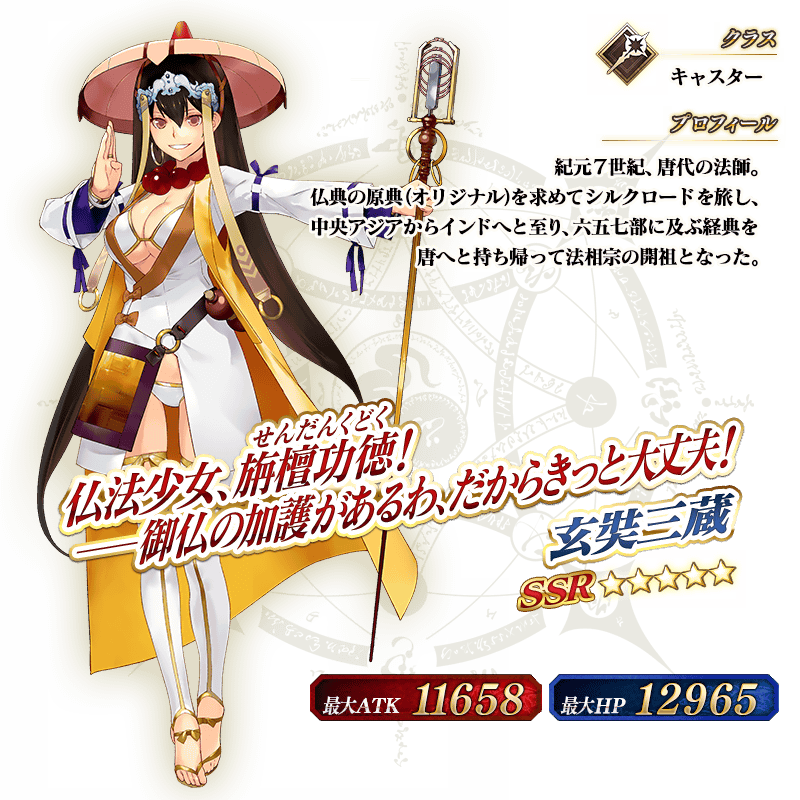

◆「Death Jail・夏日逃脫 ～罪與絶望的梅芙大監獄2017～ Pick Up2召喚(每日交替)」期間◆
期間:2017年8月24日(四) ～9月1日(五) 11:59
舉辦期間限定「Death Jail・夏日逃脫 ～罪與絶望的梅芙大監獄2017～ Pick Up2召喚(每日交替)」！
在「Death Jail・夏日逃脫 ～罪與絶望的梅芙大監獄2017～」活躍的Servant「★5(SSR)女王梅芙」「★5(SSR)玄奘三藏」以每日交替Pick Up！
另外「★4(SR)湯瑪斯・愛迪生」「★3(R)查爾斯・巴貝奇」常駐Pick Up！
詳情請在聖晶石召喚畫面左下的召喚詳細確認。
※Pick Up期間中、女王梅芙、湯瑪斯・愛迪生就算是第五特異點通過前也能入手。
在「Dead Heat・夏日競賽！ ～夢與希望的伊絲塔盃2017～Pick Up召喚(每日交替)」與「Death Jail・夏日逃脫 ～罪與絶望的梅芙大監獄2017～ Pick Up召喚(每日交替)」登場的期間限定概念禮裝也Pick Up！
裝備在「Dead Heat・夏日競賽！ ～夢與希望的伊絲塔盃2017～Pick Up召喚(每日交替)」與「Death Jail・夏日逃脫 ～罪與絶望的梅芙大監獄2017～ Pick Up召喚(每日交替)」登場的期間限定概念禮裝「★5(SSR)サマー・リトル」「★5(SSR)真夏のひと時」「★4(SR)ホワイト・クルージング」「★4(SR)キング・ジョーカー・ジャック」「★3(R)シュガー・バケーション」「★3(R)カルデア・ビーチバレー」的話會提升活動道具的掉落獲得數。
※「★3(R)シュガー・バケーション」「★3(R)カルデア・ビーチバレー」在Pick Up期間中，也能在友情點數召喚獲得。
Pick Up期間中，Pick Up Servant、期間限定概念禮裝的出現機率提升！
10次召喚中確定1張★4(SR)以上和確定1位★3(R)以上的Servant！
※確定★4(SR)以上包含Servant和概念禮裝。
※所謂「出現機率提升」意指比同稀有度的Servant及概念禮裝出現機率更高的設定。
| 每日交替Pick Up期間 | 每日交替Pick Up內容 |
|---|---|
| 8月24日(四) ～8月25日(五) 22:59 | 女王梅芙、湯瑪斯・愛迪生、查爾斯・巴貝奇 |
| 8月25日(五) 23:00～8月27日(日) 22:59 | 玄奘三藏、湯瑪斯・愛迪生、查爾斯・巴貝奇 |
| 8月27日(日) 23:00～8月28日(一) 22:59 | 女王梅芙、玄奘三藏、湯瑪斯・愛迪生、查爾斯・巴貝奇 |
| 8月28日(一) 23:00～8月29日(二) 22:59 | 女王梅芙、湯瑪斯・愛迪生、查爾斯・巴貝奇 |
| 8月29日(二) 23:00～8月30日(三) 22:59 | 玄奘三藏、湯瑪斯・愛迪生、查爾斯・巴貝奇 |
| 8月30日(三) 23:00～9月1日(五) 11:59 | 女王梅芙、玄奘三藏、湯瑪斯・愛迪生、查爾斯・巴貝奇 |
※請注意會以每日交替變更Pick Up的Servant。
挑戰在期間限定活動「Death Jail・夏日逃脫 ～罪與絶望的梅芙大監獄2017～」的主線關卡通過後出現的高難易度關卡取得女王梅芙的靈衣開放權吧！
想開放女王梅芙的靈衣「魅惑的獄長樣式」的話，除了靈衣開放權外必須再加上，以下的開放條件和素材。

※在期間限定活動「Death Jail・夏日逃脫 ～罪與絶望的梅芙大監獄2017～」中追加靈衣的Servant只有女王梅芙。
※女王梅芙的靈衣開放權只限在「Death Jail・夏日逃脫 ～罪與絶望的梅芙大監獄2017～」的舉辦期間能取得。

※「靈衣開放」後自動切換戰鬥角色和圖示。若想回到「靈衣開放」前的狀態和變成其他再臨階段的情況，可自Servant詳細畫面變更。
※「靈衣開放」只變更Servant的外觀，職階和能力等並無變化。

「靈衣開放」可自強化畫面選擇。
介紹女王梅芙、玄奘三藏的寶具演出！
在Fate/Grand Order官方網站內的公告中，公開了「★5(SSR)女王梅芙」及「★5(SSR)玄奘三藏」的寶具演出。敬請確認。





